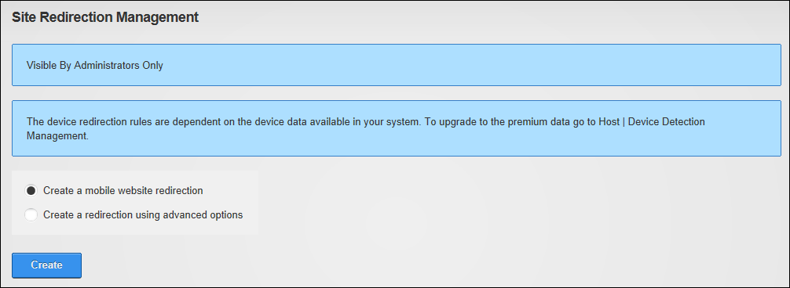
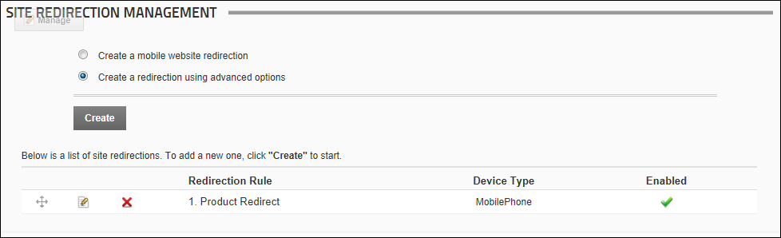

Site Redirection Management allows Administrators to direct users to different sites or site pages depending on the type of device they are using to browse your site. By configuring site redirection rules you can ensure users are always sent to the site that provides optimum viewing for their mobile device. DNN Platform comes with device data that provides the ability to configure site redirection paths for mobile phones, however you will need to obtain additional data to create redirection paths for other types of mobile devices such as smartphones, eBook readers, tablets, etc. DNN Platform users can upgrade to this premium data service by purchasing a licence from the DNNStore.
To find out the benefits of upgrading to premium data, see the Host > Device Detection Management module.
To find out the benefits of upgrading to premium data,
Premium data is included in Evoq Content and Evoq Content Enterprise.
The Site Redirection Management module is pre-installed on the Admin > Advanced Settings >  Site Redirection Management page and cannot be added to other pages.
Site Redirection Management page and cannot be added to other pages.

The Site Redirection Management Module
If you choose to activate Premium device data, the red warning message is removed.
